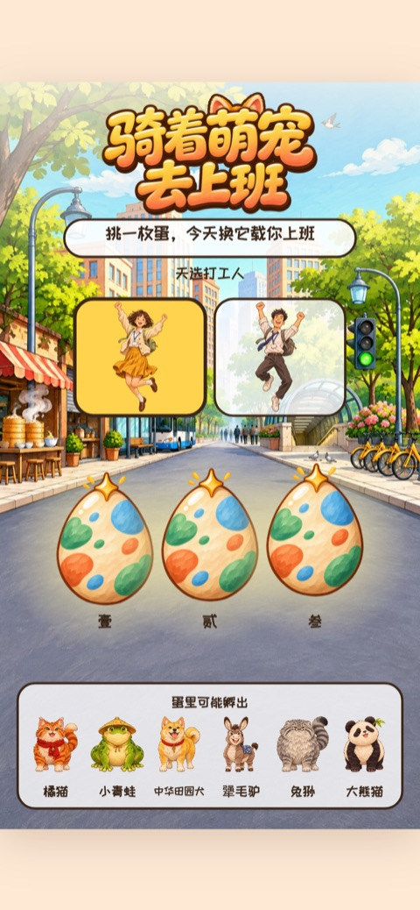
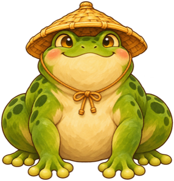
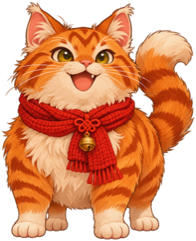
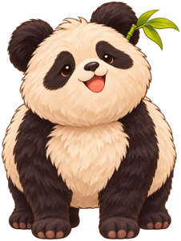
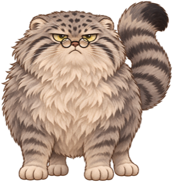

今天也被毛孩子
接送上下班
我是皮妞妞。分享萌宠日常、做萌宠短视频，也收集好用的小工具。还做了两款萌宠通勤小游戏，早上骑它去上班，晚上它来接你回家。




点开就能玩
不用下载、不用登录。手机竖屏玩最顺手。

在做的事
都和毛孩子有关。
萌宠分享
猫猫狗狗的日常、养宠的小经验，还有路上遇到的可爱瞬间。
萌宠短视频
用 AI 给毛孩子拍小剧场：它会说话、会上班，还会来接你回家。
工具使用
做图、剪视频、配音用到的好用工具，怎么上手、哪里收费都写清楚。